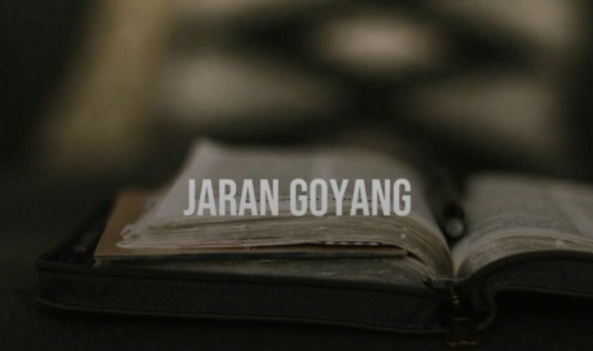

Karya
Jaran Goyang

Part 2 Humaira, Kamu wanita yang baik, siapa yang tidak ingin memenangkan hatimu? Termasuk aku, aku mencintaimu tapi aku melukaimu. Aku masih ingin tetap tinggal pada hangatnya lakumu, pada teduhnya matamu, pada lembutnya perkataanmu. Aku adalah laki-laki tidak tau diri. Dicintai oleh wanita yang aku cintai sekaligus aku lukai wanita yang sangat menghormatiku, yang memperlakukanku selembut kasih sayang Ibuku. Maafkan aku Humaira. Mungkin kata maaf dariku tidak akan mampu mengobati luka di hatimu, aku tidak tau dengan diriku. Kamu berhak mendapatkan laki-laki yang setulus hatimu, Humaira. Lima belas hari lalu pesan whatsapp dari Mas Zaid yang membuatku lemas tak berdaya. Pesan itu tidak bosan-bosannya aku baca berkali-kali setiap hari, mengulang kata demi kata, menafsirkan kalimatnya, siapa tau ada kata yang belum bisa aku tafsir dengan logika, membayangkan lembut perkataannya yang biasa aku lihat dengan penuh cinta dan harapan. Tapi tidak seindah itu, lukaku datang lebih dulu. Sesak, perih, dan nyeri di rongga dada yang pusatnya entah dimana meranggas seperti mematikan seluruh energi pada sendi-sendi, membuatku lemas tak berdaya. Seperti biasa, aku hanya membaca berulang-ulang percakapan whatsappku dengan Mas Zaid lalu melamun dan menangis. Kini aku semakin ragu dengan usahaku melupakannya, Hindun mengungkap banyak hal dari masalah ini. Dari alasan Mas Zaid berubah hingga Halimah teman kamarku yang sekaligus merangkap sebagai selingkuhannya Mas Zaid dikabarkan menggunakan Jaran Goyang. Awalnya Halimah adalah santri yang pendiam dan sering mendapat bully-an dari santri putra lantaran parasnya yang kurang cantik dan selalu berpakaian asal-asalan. Jemuran berjalan adalah julukkan baginya karena dia sering memakai pakaian yang tidak matching seperti sarungnya yang hijau, bajunya merah, dan kerudungnya kuning. Karena Halimah sudah sampai pada ujung kesabarannya, akhirnya dia memberanikan diri untuk merubah dirinya secara drastis dan instan. Sekarang nama Halimah muncul dipermukaan, menjadi idaman semua santri putra. Aku tak tau jika Halimah sudah lebih dulu menyukai Mas Zaid sebelum Mas Zaid mendekatiku. Jika aku tau pasti aku tidak terang-terangan sering menceritakan tentang Mas Zaid didepannya, aku merasa bersalah pasti Halimah sangat terluka. “Kemuliaan akan datang kepada manusia yang pandai mengikhlaskan.” Hindun selalu muncul mengingatkanku saat tangisku menjadi. Aku tau yang dikatakan Hindun, tapi aku tak tau bagaimana caranya. Aku terjebak di lembah kepiluan, kehilangan cara untuk hanya sekadar mengalihkan pikiran. Setiap aku memantapkan hati untuk berhenti memuja Mas Zaid justru bayang-bayangnya semakin tajam tergambar diotakku, ketentraman yang dahulu ada semakin bersemanyam memenuhi hatiku. “Ra, nanti malam kamu siap-siap ya. Ada rahasia yang akan kita ungkap.” Aku terkejut dengan ajakan Hindun, rahasia apa yang akan diungkap? Tak perlu meng-iya-kan, karena itu bukan lagi ajakkan melainkan perintah yang siap tidak siap harus aku lakukan. Dari kejauhan kulihat Halimah berjalan ke arahku, aku melihat Mas Zaid dalam dirinya membuat dadaku sangat sesak dan nyeri. Dia adalah teman yang sangat baik, aku tidak berani menyimpulkan bahwa dia adalah orang yang telah merebut hati Mas Zaid dariku. Aku tidak berani meng-iya-kan dendam di hati kecilku yang semakin hari semakin menekan, aku harus bisa menolak rasa dendam ini. Jika bisa mengikhlaskan maka kemuliaan akan datang padaku, sebaliknya jika menuruti rasa dendam maka keburukan yang akan datang padaku. “Ra ini ada titipan dari Kang Zaid, tadi Kang Hamid menitipkannya padaku.” Halimah membawa kotak yang terbungkus kertas kado. Kejutan-kejutan dari Mas Zaid yang dulu membuatku merasa sangat istimewa, kini hanya menjadi hal yang tak ada apa-apnya terkalahkan oleh kekecewaan yang belum mereda. Raut muka Halimah selalu mengisyaratkan rasa bersalah ketika dia berbicara denganku, tapi dia sangat ingin memenangkan hati Mas Zaid. Aku tidak bisa apa-apa, Halimah lebih dulu menyukai Mas Zaid meski dulu Mas Zaid sangat menolaknya dan pada akhirnya kini takluk pada kecancikannya yang baru. Jam dua belas malam Hindun mengarahkanku menuju kamar mandi umum Gedung B paling pojok yang jarang digunakan. Kulewati jemuran yang dipenuhi dengan sarung, mukena, gamis, baju kemeja, kaos, celana, pakaian dalam, kerudung, dan semua jenis gombalan yang tergantung rapat. Dalam gelap aku mengendap-endap membelah juntaian-juntaian ujung pakaian yang menghalangi mataku utuk menyusuri jalan karena takut menginjak lantai yang tergenang air bekas tetesan baju yang belum lama dijemur lalu mencelakakanku. Jemuran berada di dalam ruangan sehingga tidak mungkin kehujanan. Beberapa kamar mandi sudah kulewati yang semua pintunya terbuka, hingga aku berhenti di kamar mandi paling ujung yang tertutup. Suara gemercik air membuatku terkejut, mencerna situasi dan menyimpulkan beberapa kemungkinan. Apakah itu hantu atau manusia? Siapa yang berani mandi malam-malam di kamar mandi umum yang hampir tidak pernah dipakai, lagi pula di setiap kamar memiliki kamar mandi dalam yang tidak hanya satu dan tidak mungkin mengantre karena pasti tidak ada yang berani mandi ditengah malam seperti ini. Aku segera bersembunyi di kamar mandi sebelahnya karena suara handuk yang dikebatkan dan disusul kancing pintu yang berbunyi, sepertinya dia akan keluar. Kulihat dengan waswas, mempersiapkan diri mengunci mulut agar tidak menjerit kalau-kalau nanti yang keluar adalah sosok yang menyeramkan. Halimah! sangat jelas yang melewatiku tadi adalah Halimah. Wangi bunga kenanga menyeruak menusuk hidungku hingga membuatku sedikit pusing. Aku lihat bekas dia mandi, ada banyak bunga-bungaan yang satu per satu masuk ke dalam lubang air mengikuti aliran air bekas Halimah mandi. Mawar merah, mawar putih, melati, kenanga, cempaka kuning, cempaka putih, dan sedap malam. Halimah mandi kembang tujuh rupa ditengah malam hingga lingsir wengi. Untuk apa? Apa dia sudah gila? Apa dia kesurupan? Berbagai pertanyaan muncul dalam otakku namun Hindun tidak juga hadir. Sepertinya Hindun ingin membiarkanku menguak sendiri rahasia yang pernah dia katakan.